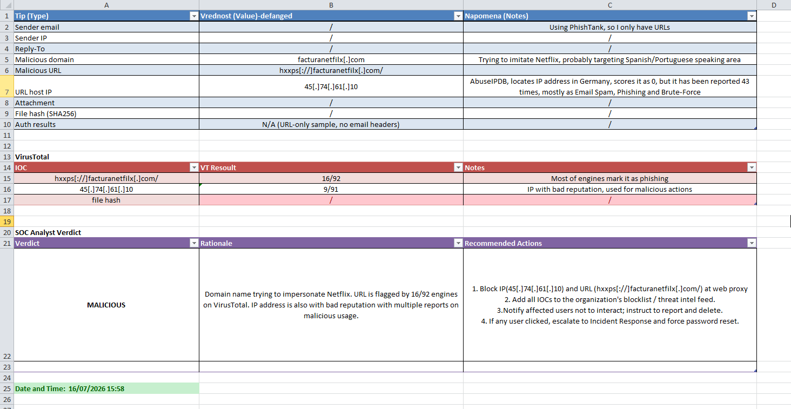
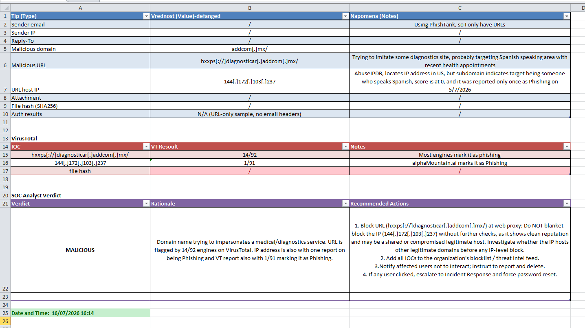
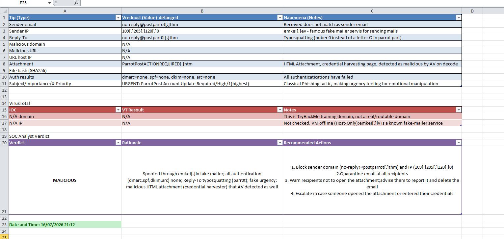

My first solo phishing triage in the home lab
2026-07
After building my home SOC lab, phishing analysis was the next thing I wanted to try, because untangling phishing is something I really enjoy in SOC work. I had already done triage through TryHackMe rooms, but this was my first time doing it solo, in my own environment, from start to finish: taking real malicious samples, investigating them the way an L1 analyst would, and writing up a verdict with recommended actions.
The goal
I wanted to analyse real phishing content, not toy examples. I used two sources: live malicious URLs from PhishTank, and full .eml files from TryHackMe rooms I had not solved yet, so the analysis would be genuine and not something I already knew the answer to. I looked for complete .eml files elsewhere too, but I mostly found only extracted indicators rather than whole emails, so the TryHackMe rooms turned out to be the best source of real headers to practise on.
Part 1: URL triage from PhishTank
My workflow for each malicious URL was simple and repeatable:
First, check the URL on VirusTotal to see how many engines flag it and how. Then look up the hosting IP on AbuseIPDB and Whois, for reputation and origin. Finally, record everything as defanged indicators and write a short SOC-style report with a verdict and recommended actions.
A quick note on defanging: I wrote every indicator as hxxps and
wrapped the dots in brackets, like domain[.]com. It is
a small habit that stops anyone, including future me, from
accidentally clicking a live malicious link pasted into notes.
Here is one example: a domain impersonating Netflix. VirusTotal flagged the URL on 16 of 92 engines, most of them labelling it phishing. The hosting IP had been reported dozens of times for spam, phishing and brute force. Verdict: malicious. My recommended actions were to block the indicators at the web proxy, add them to the threat intel feed, warn users not to interact, and escalate to incident response if anyone had already clicked.

The moment that taught me the most
Then I hit a more interesting case: a domain impersonating a medical diagnostics service. The URL was clearly phishing, flagged by 14 of 92 engines. But the hosting IP had been reported only once, and otherwise had a clean reputation.
That small detail taught me something I had not really internalised before: a legitimate IP can be abused. It might be a shared host, or a compromised legitimate server. So in my report I deliberately recommended NOT blanket-blocking the IP without further investigation, and instead blocking the URL while checking whether that same IP also hosted legitimate domains. Blocking an IP that also serves innocent sites can cause real collateral damage.
That nuance, the difference between a malicious IP and a legitimate IP used once for something malicious, was the most valuable lesson of the whole exercise. It is exactly the kind of judgment call that separates reading a tool's output from actually analysing.

Part 2: going deeper with a full .eml
URLs are only half the story. To practise the other half, I downloaded a complete .eml file from a TryHackMe room and analysed the full headers and body.
This is where email authentication comes in. I checked SPF, DKIM, DMARC and ARC, and every one of them came back as none or failed. That is a strong signal on its own, because a genuine sender from a real company almost always passes these checks. On top of that, several classic phishing tells lined up:
The email had been sent through a known free anonymous mailer service, visible in the headers, which is a common way to spoof a sender. The Reply-To used typosquatting, a zero instead of the letter o in the name, so it looks legitimate at a glance. The subject screamed urgency, marked high priority and demanding an account update, a textbook emotional-manipulation tactic to make the target act before thinking. And it carried an HTML attachment that was a credential-harvesting page.

My favourite detection moment
When I tried to decode the attachment to inspect it, my antivirus stepped in and revoked the action, because it had already recognised malicious patterns in the HTML during decoding. I did not even need the decoded content to reach a verdict: the antivirus reaction was itself the answer. It was a neat reminder that detection happens in layers, and sometimes a tool catches something before you finish your own analysis.
How I wrote it up
For each sample I produced a small structured report: the indicators, defanged, with notes, the VirusTotal results, and a SOC analyst verdict with a rationale and recommended actions such as block, add to blocklist, notify users, and escalate if clicked. Writing the verdict and the actions, not just "this is bad," is the part that felt most like real SOC work. An analyst's job is not only to decide, but to state clearly what should happen next.
Mapping to MITRE ATT&CK
All of this sits under Initial Access, technique Phishing (T1566), with the malicious link and the malicious attachment matching its two sub-techniques. Connecting what I was seeing back to the framework, the subject of my previous post, made the whole exercise feel joined-up.
What's next
I want to bring this into Splunk next, detecting phishing-related activity from logs rather than analysing samples by hand. That will be another post.
Phishing analysis rewarded patience and curiosity more than anything else. The most useful skill was not any single tool, it was learning to question the easy answer: is this IP really malicious, or was it just used once by someone malicious? That question, I am learning, is the heart of triage.
← back to all posts